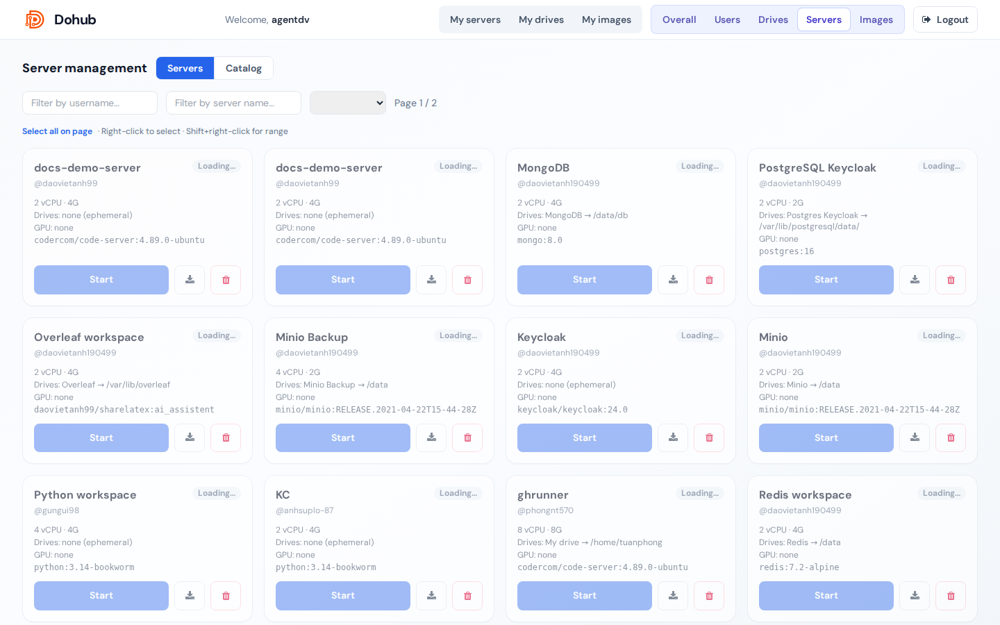

Sub-tab Servers liệt kê workspace toàn hệ thống với owner @username.
Filter
- Username, server name, resource group.
Thao tác
- Start / Stop / Delete — giống user view.
- Click card → modal chi tiết (logs, terminal, …) như user.
- Bulk: Start servers, Stop servers, Delete servers với xác nhận.
Sub-tab Catalog — quản lý template và equipment: xem Server templates.